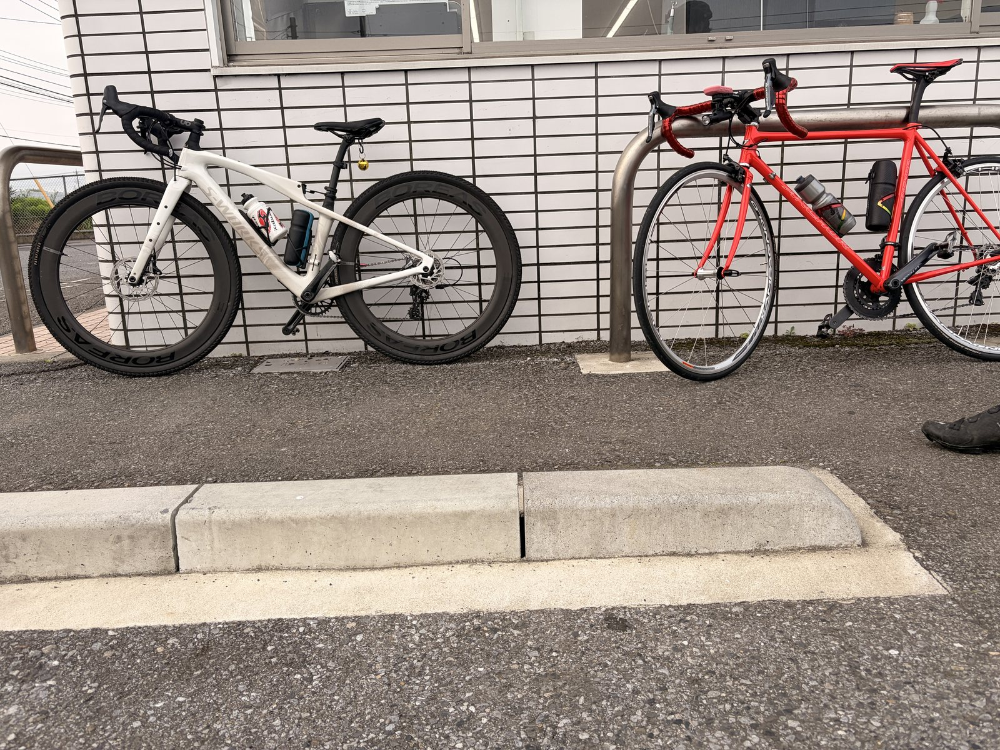
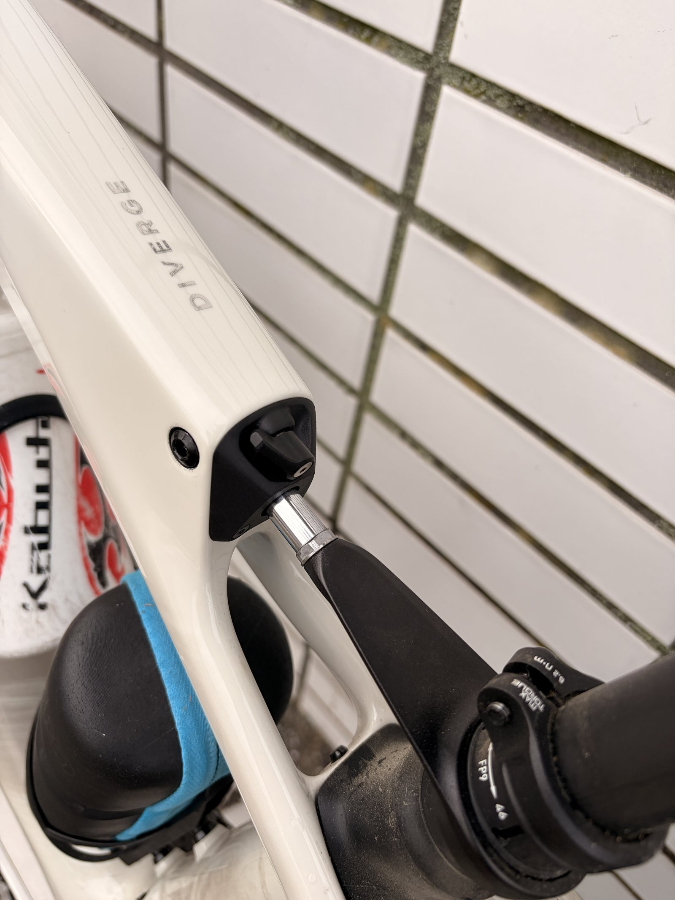
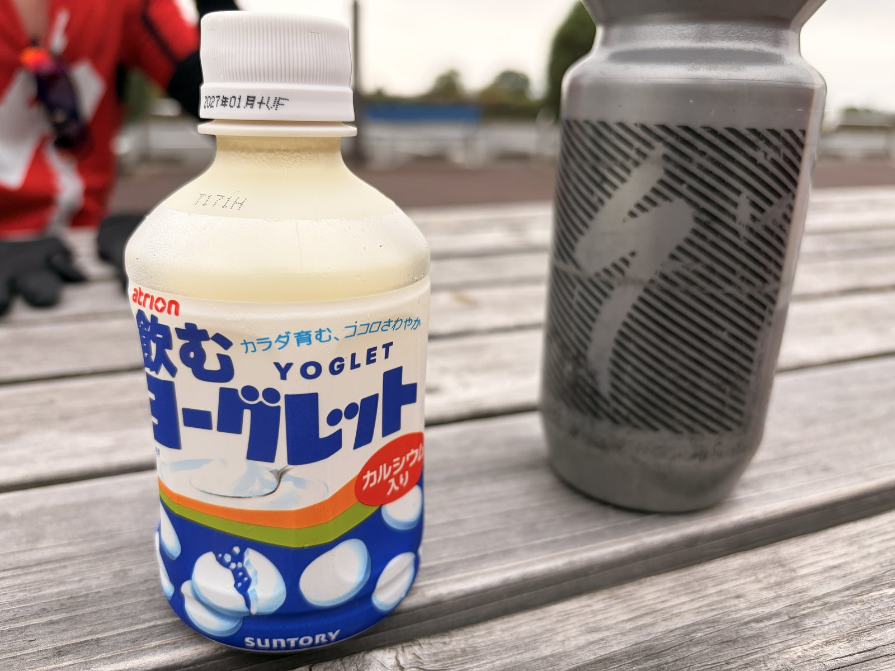

友人と渡良瀬CRへ。回復走でもTSS83
5時30分集合。回復走のつもりで友人と渡良瀬サイクリングロードへ行った。結果、楽しかった。そしてTSSは83.6だった。回復とは。

5時30分、コンビニ集合
今日は友人S、友人Dと3人で渡良瀬サイクリングロードを走った。集合は5時30分。場所はコンビニ。朝の空気はまだ軽く、走るにはちょうどいい。
ただ、私は2時に目が覚めてから寝られず、そのままPC作業をしていた。前日からウェアも準備していて、かなり楽しみにしていたらしい。遠足前の小学生みたいなことをしている。大人なのに。
一人で走る練習は、自分のペースで進められるのが良い。強度も時間も自分で決められる。ローラーならなおさらで、数字と向き合いやすい。
でも、友人と走るサイクリングは別物である。強くなるための練習とは少し違うところで、走ること自体が楽しくなる。今日はその感じがかなりあった。
友人SはALLEZ SPRINT、友人DはDiverge
友人SはALLEZ SPRINT、友人DはDiverge。私は赤いRNC7で行った。Aethos2ではなくRNC7を選んだのは、気分である。こういう日もある。
友人DのDivergeは、今回初めてちゃんと見た。軽く乗せてもらったが、Future Shockのサスペンションが効いていて乗りやすい。MTBほど柔らかいわけではなく、路面の突き上げをうまく吸収してくれる感じだった。
Divergeの感想は、ちゃんと書くなら別記事にした方がいい。今日はあくまで友人ライドの記事なので、ここでは軽く触れるだけにしておく。機材の話を始めると、気づいたら本題が行方不明になる。


回復走のつもりだった
出発時点では、今日は回復走のつもりだった。前日までローラー練習もしているし、高強度を入れる気分ではない。脚の状態としても、高強度は無理そう。ただし、普通に回すぶんには全然動く。
こういう日は難しい。踏めないわけではない。でも、踏みすぎるとたぶん後で来る。なので、会話できるくらいのペースで淡々と走るのがちょうどいい。
渡良瀬CRは、広く見通しの良い区間がある。周囲を確認しながら、無理のないペースで会話しつつ進める。仕事の話、自転車の機材の話、最近話題になっていた某宇宙系の上場ニュースの話。朝から話題が広い。
こういう会話があるだけで、同じ距離でも体感が変わる。一人ならただの有酸素走でも、友人と走ると「今日は良い日だった」みたいな記憶になる。
トレインを組むと、やっぱり楽しい
走りやすい区間では、短くトレインを組んで回した。速度はだいたい32〜35km/h前後。無理に踏み倒す感じではないが、少し集中するくらいの速度感だった。
友人Sも友人Dも、「最近あまり乗っていない」と言う。だが、先頭に出ると楽しそうに引いていた。これは速い遅いの話ではない。先頭に出ると、自然にスイッチが入る感じがある。
先頭に出ると戦闘態勢。戦闘だけに。
言ったあとで少し後悔したが、たぶん本文には残しておく。こういうしょうもない一言も、友人ライドの空気ではある。
今日いちばん楽しかったのは、このトレインを組んで回す場面だった。ローラーで数字を追う練習も大事。でも、前の人の後ろについて、交代しながら進む感覚は別の楽しさがある。
今日の主なデータ
数字を見ると、回復走というには少し存在感がある。平均パワーは138Wなので低めだが、NPは194W。IFは0.705。TSSは83.6。
強く踏んだ時間がずっと続いたわけではない。それでも1時間40分ほど動き続けると、負荷はしっかり積まれる。回復走のつもりでも、有酸素はごまかせない。
道の駅かぞわたらせで休憩
途中、道の駅かぞわたらせで休憩した。こういう休憩があると、サイクリング感が出る。練習ログだけなら止まらず帰ってもいいが、今日は友人ライドである。
そこで飲んだのが、ヨーグレットドリンク。ヨーグレット感は思ったより薄かった。だが、普通においしい乳酸菌系ドリンクだった。名前の期待値が少し強すぎただけで、飲み物としては良い。

帰宅後は全身が重かった
走っている最中、少しキツかった場面は特になかった。脚も普通に動いたし、気分も良かった。だが、帰ってから体が重くなった。
脚だけではなく、全身のだるさという感じだった。2時に目が覚めてから寝られなかった影響もあると思う。ライドそのものの疲労に、早起きというより早すぎる起床が乗った。
その後、2時間ほど寝た。起きたら体の重さは消えていた。こういう時、睡眠は強い。プロテインより先に寝た方がいい場面もある。いや、両方大事だが。
今回やってみて思ったこと
一人練習は良い。ローラーも良い。数字を見ながら、富士ヒルに向けて必要な力を積み上げるにはとても向いている。
でも、それだけだと続かない日もある。ローラー地獄だけで一年間やるのは、たぶん私には向いていない。友人と走って、話して、少しトレインを回して、休憩で変な飲み物を飲む。こういう日があるから、また練習も続けられる。
今日のライドは、強度としてはそこまで高くない。ただし、時間を乗ったので有酸素はしっかり積まれた。楽しかったのにTSS83。回復走とは何か、少し考えたくなる。
まとめ
今日は友人S、友人Dと渡良瀬CRを走った。目的は回復走。だが、終わってみれば45.53km、NP194W、TSS83.6。強度は低めでも、時間を乗ればちゃんと負荷になる。
一番楽しかったのは、トレインを組んで回した場面だった。友人と走ると、自分一人では入らないスイッチが入る。これは練習効率とは別の価値だと思う。
帰宅後は全身のだるさが出たが、2時間ほど寝たら回復した。早起きの影響もあったはず。次に同じようなライドをする時は、前日の睡眠も含めて見ておきたい。
結論。一人練習も良い。でも友人と走る楽しさは別物。富士ヒルに向けて強くなるなら、こういう有酸素ライドもちゃんと大事にしたい。
自分用メモ
- 移動時間1:41:20
- 経過時間2:16:27
- 獲得標高80m
- 平均速度26.9km/h
- 最大パワー846W
- 20分最大平均172W
- FTP設定275W
- 運動量840kJ
- 平均ケイデンス82rpm
- 平均気温20.9℃